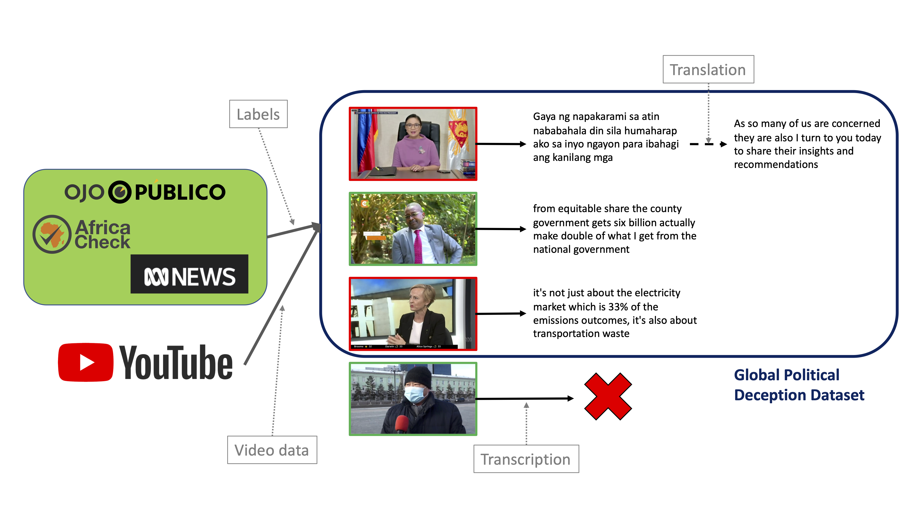

About the dataset
The dataset comprises videos of public figures (politicians) from various countries uttering deceptive and truthful speech.
Dataset creation process is summarized in the following figure. More details can be found in the
paper.

Citing the datset
If using this dataset in your research, please cite the following paper:
@inproceedings{10.1145/3536221.3556617,
author = {Bai, Chongyang and Bolonkin, Maksim and Regunath, Viney and Subrahmanian, V.S.},
title = {POLLY: A Multimodal Cross-Cultural Context-Sensitive Framework to Predict Political Lying from Videos},
year = {2022},
isbn = {9781450393904},
publisher = {Association for Computing Machinery},
address = {New York, NY, USA},
url = {https://doi.org/10.1145/3536221.3556617},
doi = {10.1145/3536221.3556617},
booktitle = {Proceedings of the 2022 International Conference on Multimodal Interaction},
pages = {520–530},
numpages = {11},
keywords = {Political Deception, Deception Detection Dataset, Natural Language Processing, Deception Detection, Video Understanding},
location = {Bengaluru, India},
series = {ICMI '22}
}